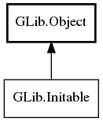

GLib.Initable Reference Manual
Packages
gio-2.0
GLib
Initable
new
new_valist
newv
init
Initable
Object Hierarchy:

Description:
public
interface
Initable
:
Object
All known implementing classes:
CharsetConverter
DBusConnection
DBusObjectManagerClient
DBusProxy
DBusServer
InetAddressMask
Request
RequestData
RequestFile
RequestHTTP
Socket
All known sub-interfaces:
NetworkMonitor
Namespace:
GLib
Package:
gio-2.0
Content:
Static methods:
public
static
Object
new
(
Type
object_type,
Cancellable
? cancellable =
null
, ...)
throws
Error
public
static
Object
new_valist
(
Type
object_type,
string
first_property_name,
va_list
var_args,
Cancellable
? cancellable =
null
)
throws
Error
public
static
Object
newv
(
Type
object_type,
Parameter
[] parameters,
Cancellable
? cancellable =
null
)
throws
Error
Methods:
public
abstract
bool
init
(
Cancellable
? cancellable =
null
)
throws
Error